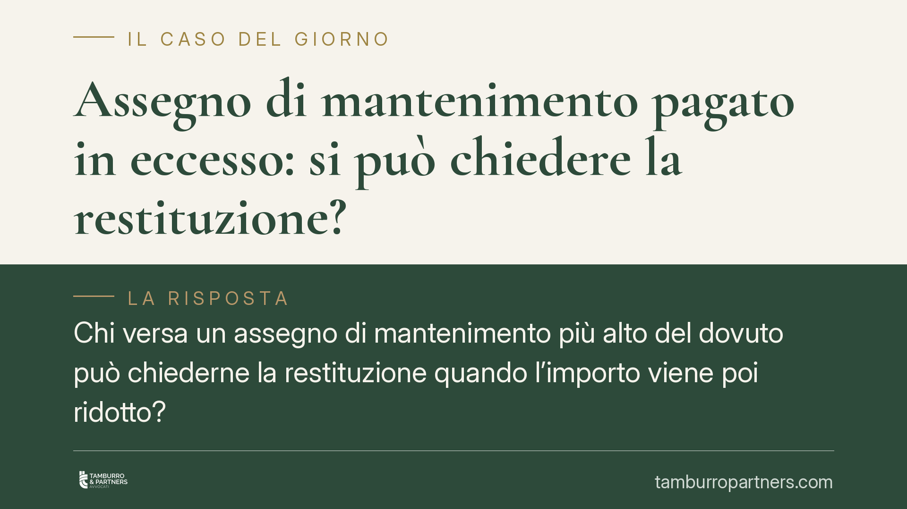

Assegno di mantenimento pagato in eccesso: si può chiedere la restituzione?
Chi versa un assegno di mantenimento più alto del dovuto può chiederne la restituzione quando l'importo viene poi ridotto? La giurisprudenza prevalente dice di no: le somme destinate ai figli e già spese per i loro bisogni non si recuperano. La riduzione vale per il futuro. Vediamo su quali basi normative poggia questo orientamento e cosa comporta in concreto.

Il punto di partenza: la ripetizione dell'indebito
La regola generale è contenuta nell'art. 2033 del Codice civile: chi paga ciò che non deve ha diritto a riaverlo. È il principio della cosiddetta *ripetizione dell'indebito*.
In materia di mantenimento dei figli, però, questa regola incontra un limite consolidato in giurisprudenza. Quando un genitore ha versato, per un certo periodo, somme superiori a quelle poi riconosciute come dovute, non può di norma pretenderne la restituzione né compensarle con i versamenti futuri.
Perché le somme non si restituiscono
Il fondamento dell'irripetibilità non è che l'assegno per i figli sia un credito alimentare in senso tecnico. Gli alimenti veri e propri sono disciplinati dall'art. 433 c.c. e rispondono a presupposti diversi (lo stato di bisogno di chi li chiede). Il mantenimento dei figli è cosa distinta: trova la sua disciplina negli artt. 337-ter e seguenti del Codice civile, introdotti dalla riforma dell'affidamento condiviso (L. 54/2006).
La ragione per cui le somme non tornano indietro è un'altra: si presume che il denaro versato per i figli sia stato già consumato per soddisfare i loro bisogni primari — vitto, alloggio, istruzione, cura. Una volta impiegate per quelle finalità, le somme non sono più nel patrimonio del genitore collocatario e non possono essere restituite senza intaccare un soddisfacimento già avvenuto. È una tutela che guarda al minore, non al genitore che riceve.
Questo orientamento è stabile nella giurisprudenza di legittimità, che da tempo esclude la ripetizione delle somme versate a titolo di mantenimento della prole, salvo casi eccezionali di versamenti del tutto privi di titolo.
La revisione opera solo per il futuro
Le condizioni economiche fissate in sede di separazione, divorzio o nei provvedimenti sui figli non sono immutabili. L'art. 337-quinquies c.c. consente a ciascun genitore di chiederne la revisione quando mutano le circostanze (redditi, esigenze dei figli, situazione lavorativa).
Ma la modifica — anche quando riduce l'importo — produce effetti dal momento in cui viene disposta, non retroattivamente sulle mensilità già versate. Questo spiega perché la riduzione non si traduce in un credito del genitore obbligato per il passato.
Implicazioni pratiche
Le conseguenze cambiano a seconda della posizione.
Per il genitore obbligato (chi paga). Continuare a versare l'importo stabilito finché non interviene un provvedimento di modifica. Non si può ridurre o sospendere l'assegno di propria iniziativa: ogni somma arretrata resta dovuta, mentre ciò che si è versato in più difficilmente si recupera. Conviene quindi agire tempestivamente per la revisione quando le condizioni cambiano.
Per il genitore collocatario (chi riceve per conto dei figli). Le somme ricevute e impiegate per i figli sono, di regola, acquisite in via definitiva. Ciò non autorizza però usi impropri delle somme destinate ai minori.
Un'avvertenza importante: queste considerazioni riguardano l'assegno per i figli. Per l'assegno in favore dell'ex coniuge il quadro è diverso e la ripetibilità delle somme versate in eccesso segue regole proprie, con orientamenti che vanno valutati caso per caso. Non si possono sovrapporre le due situazioni.
Cosa fare in concreto
- Non modificare l'assegno da soli. Continuate a versare l'importo stabilito fino a un provvedimento del giudice: l'autoriduzione espone al recupero degli arretrati.
- Attivate subito la revisione quando cambiano redditi o esigenze: gli effetti decorrono dalla domanda o dalla decisione, non prima.
- Documentate i mutamenti (perdita del lavoro, variazioni di reddito, nuove esigenze dei figli) con prove scritte, utili a sostenere la richiesta.
- Distinguete sempre tra assegno per i figli e assegno per l'ex coniuge: la disciplina del rimborso non è la stessa.
- Verificate la natura dei versamenti prima di invocare la restituzione: solo somme davvero prive di titolo possono, in casi limite, essere recuperate.
Consigliamo di far valutare la singola posizione prima di avviare qualsiasi iniziativa, perché l'esito dipende strettamente dal titolo e dalla cronologia dei versamenti.
Contributo informativo a cura di Tamburro & Partners - Avv. Giuseppe Tamburro. Non costituisce parere legale.
Ogni famiglia ha il suo equilibrio.
Separazione, divorzio, affidamento, assegno: se vuoi un confronto riservato su una specifica situazione, scrivi allo studio. Ti rispondiamo entro un giorno lavorativo.